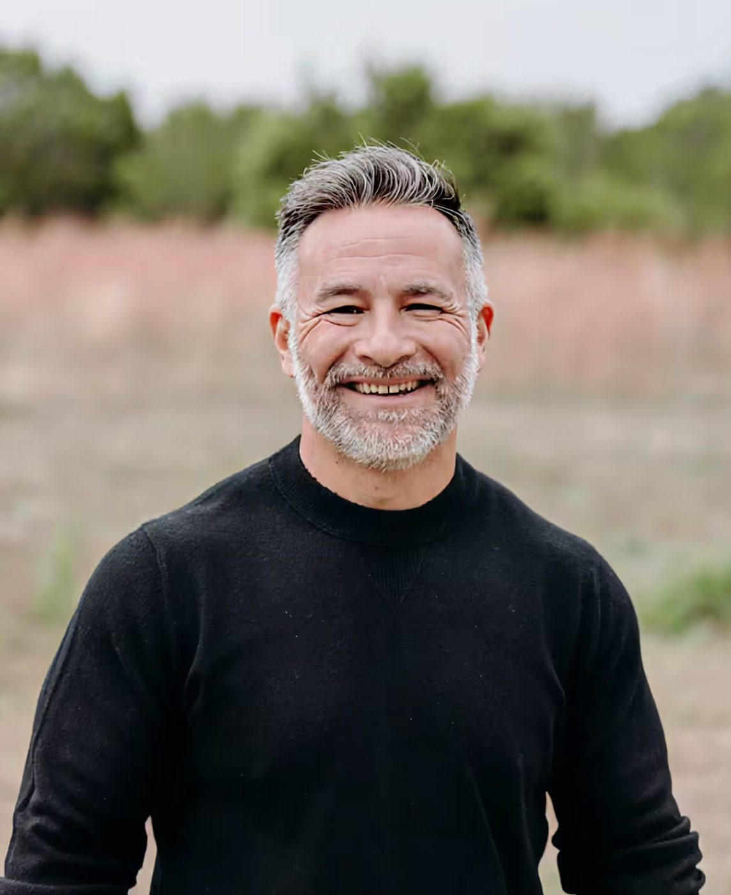
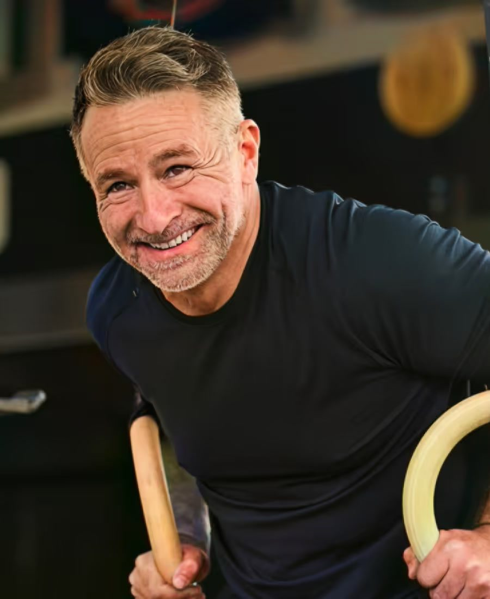
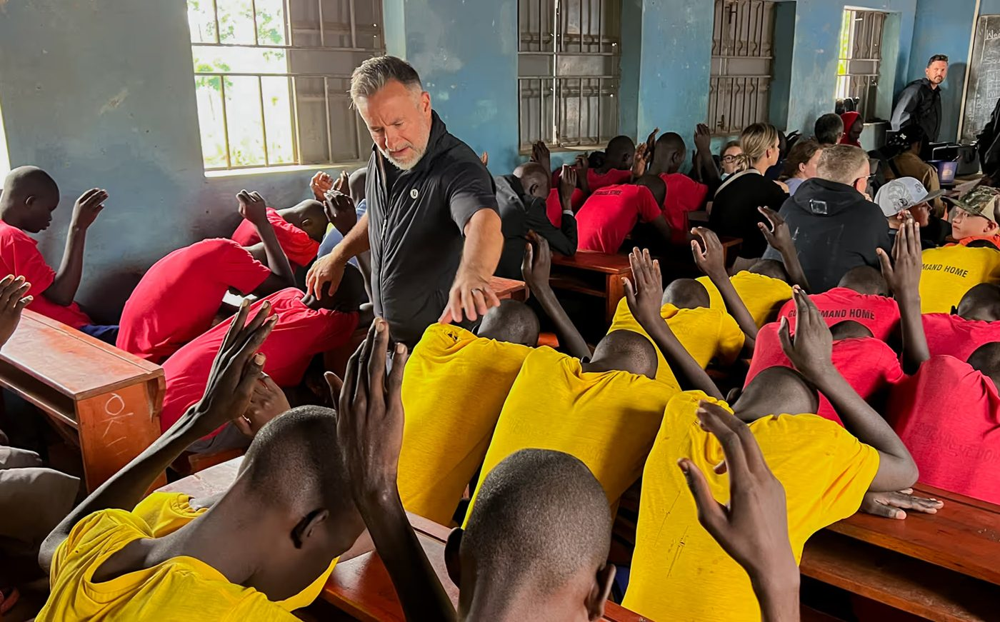

Awakenthe man God created you to be.
You were made to walk in power, purpose, and freedom.
A short video testimony from founder Dustin Sample sharing the journey behind Incredible Man and why it exists.
Real resources for men, free. And it’s going to stay that way.
Masculinity is not toxic. Passivity is.
The word incredible comes from the Latin incredibilis, “not believable.” It describes a man who lives differently: set apart, grounded, and unwavering.
Incredible Man isn’t a brand. It’s a rescue mission. In a world confused about manhood, we’re calling men back to God’s original design.
This movement is for men who want to rise above cultural confusion, relational compromise, and spiritual passivity. It’s for those ready to live as protectors, providers, fathers, brothers, and leaders, not in their own strength, but by the Spirit of God.
We’re here to encourage you to become everything Jesus died for you to be, and to do everything He died for you to do. You are not alone.
Open the door.
Let the light in.
Whether you’re just starting or looking to go deeper, there’s a place for you. Go at your own depth.
Weekly emails, sermons, a five-minute scorecard, and the podcast and book to come.
On your own time → Gather633 Men on Saturday mornings, men’s nights around the fire, and the first IMAN Retreat.
With other men → The 7 PillarsThe framework behind it all, with a free field guide for each pillar.
Browse by topic → With Pastor DHis story, one-on-one coaching and Life Plan, and bringing him to speak.
One-on-one → Give & ServeBecome a monthly partner, lead a group, or bring a buddy.
Carry it with us →Read & Listen
You don’t need more noise. You need truth.
The IMAN Email
A word for men who are done coasting. Start your week with a challenge, scripture, and encouragement to keep you focused and grounded.
Subscribe freeEight questions, five minutes, one honest look at where you really are with God, at home and in your work.
Sermons & Messages ↗AnytimeHear Dustin preach, from Awaken to Lose Your Life to Find It.
Tuesday readers hear first.
A book about who God created men to be. The draft is finished.
A separate email from Dustin’s coaching practice, for men doing the work of coaching or a Life Plan.
Gather
We weren’t built to do this alone. Every man needs guys around him who will call him up, back him up, and tell him the truth.
633 Men →
Saturdays · 6:33 AMA workout, a devotion and real conversation. Any man, anywhere, can find a group and join. You never have to say a word. Plenty of men just listen.
Good food, a real testimony from a real man, then the fire pit. Bring a buddy.
The first IMAN Retreat. Details coming.
Study materials so any man can lead other men.
The 7 Pillars
Incredible Man began when God gave me seven simple pillars. As I lived them out, they reshaped my purpose and identity. Now, we help men return to God’s design and walk it out together.
Each guide is free. In the full site, each pillar gets its own page with its guide, every IMAN email on that pillar, and related sermons.

With Pastor D
“I exist to stir the hearts of men toward a holy collision with God, to awaken them to their divine calling and purpose.”
Father, husband, brother, son. I wasn’t always the man I am today. Like many of you I struggled with identity, purpose, and what it truly means to be a godly man in today’s world. This isn’t about perfection. It’s about progression, community, and walking in the identity God designed for us.
Watch my story“Dustin is the real deal. He doesn’t just talk about being a man of God. He lives it.”


Give & Serve
IMAN exists to give men real resources for free, and it’s going to stay that way. Every level fuels the vision.
Start a group where you live, with study materials so any man can lead other men.
Text one guy and bring him with you. Send him the Tuesday email or this Saturday’s group.
The world doesn’t need more men performing. It needs more men surrendered.
Let’s rebuild a generation, one pillar at a time.
With you in the fight, Pastor D